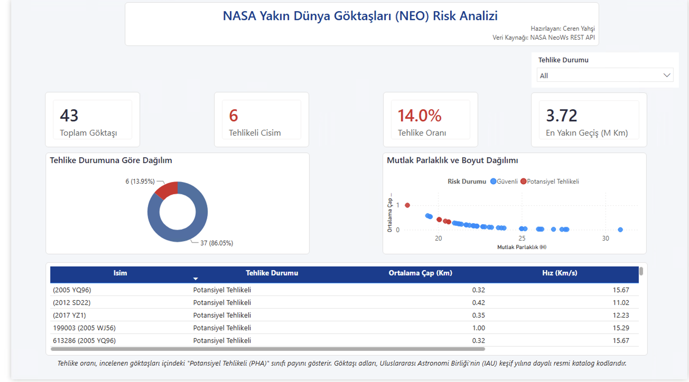

| count | mean | std | min | 50% | max | |
|---|---|---|---|---|---|---|
| Cap_Ortalama_Km | 43 | 0.197 | 0.196 | 0.003 | 0.148 | 1.004 |
| Boyut_Hiz_Etkilesimi | 43 | 3.173 | 4.045 | 0.016 | 2.171 | 20.589 |
| Yorunge_Risk_Gostergesi | 43 | 0.086 | 0.085 | 0.002 | 0.057 | 0.397 |
| Log_Iskalama_Mesafesi | 43 | 7.557 | 0.292 | 6.571 | 7.62 | 7.867 |
NASA NeoWs API ile Dünya’ya Yakın Göktaşlarının Tehlike Sınıflandırması ve Yörünge Riski Analitiği
Çoklu REST API Entegrasyonu, Astrofiziksel Özellik Mühendisliği ve Denetimli Makine Öğrenmesi Yaklaşımı
Abstract
Gezegen savunması (planetary defense) kapsamında Dünya’ya Yakın Cisimlerin (Near-Earth Objects - NEO) erken tespiti ve tehlike sınıflandırması kritik önem taşımaktadır. Bu çalışmada, NASA’nın resmi Near-Earth Object Web Service (NeoWs) altyapısındaki iki bağımsız uç noktadan (Feed ve Lookup API) elde edilen gözlemsel geçiş parametreleri ile Güneş merkezli yörünge mekaniği verileri bütünleştirilerek 43 benzersiz göktaşına ait 13 öznitelikli analitik veri matrisi oluşturulmuştur. Ham astronomik değişkenlerden astrofizik temelli dört yeni öznitelik (Ortalama Çap, Boyut-Hız Etkileşimi, Yörünge Risk Göstergesi ve Logaritmik Iskalama Mesafesi) türetilmiştir. Sınıf dengesizliği (%86.05 Güvenli, %13.95 Potansiyel Tehlikeli) altında veri sızıntısını önleyen Scikit-Learn Pipeline mimarisi ile Logistic Regression, Random Forest ve Gradient Boosting sınıflandırıcıları karşılaştırılmıştır. Deneysel bulgular, ağaç tabanlı topluluk modellerinin (Random Forest ve Gradient Boosting) test kümesinde %100 duyarlılık (Recall = 1.00) ve 1.0000 ROC-AUC skoru elde ederek yanlış negatif (False Negative) hataları tamamen ortadan kaldırdığını göstermektedir.
Keywords
NASA NeoWs API, Yakın Dünya Göktaşları, Makine Öğrenmesi, Özellik Mühendisliği, Gezegen Savunması, Power BI
1 Giriş ve Araştırma Amacı
Güneş Sistemi içerisindeki yörüngeleri Dünya’nın yörüngesine yakınlaşan asteroit ve kuyruklu yıldızlar Dünya’ya Yakın Cisimler (Near-Earth Objects - NEO) olarak tanımlanmaktadır (NASA Jet Propulsion Laboratory 2024). Uluslararası astronomi standartlarına göre, Minimum Yörünge Kesişim Mesafesi (MOID) \(0.05\text{ AU}\) (yaklaşık \(7.48 \times 10^6\text{ km}\)) veya daha az olan ve Mutlak Parlaklık Büyüklüğü \(H \le 22.0\) (yaklaşık \(140\text{ metre}\) ve üzeri çap) kriterini sağlayan göktaşları Potansiyel Olarak Tehlikeli Göktaşı (Potentially Hazardous Asteroid - PHA) sınıfında değerlendirilmektedir.
Bir göktaşının gezegenimiz açısından oluşturduğu risk yalnızca fiziksel boyutuna bağlı değildir; Güneş etrafındaki eliptik yörüngesinin basıklığı (eccentricity), ekliptik düzleme göre eğikliği (inclination) ve Dünya’ya göre bağıl geçiş hızı gibi dinamik parametrelerin birleşik bir fonksiyonudur. Bu çalışmanın temel amacı; NASA NeoWs REST API servislerinden çoklu uç nokta entegrasyonuyla toplanan gerçek gözlem verilerini kullanarak, bir göktaşının PHA sınıfına dahil olup olmadığını yüksek duyarlılıkla öngören uçtan uca bir veri analitiği, makine öğrenmesi ve iş zekası (Power BI) mimarisi geliştirmektir.
2 Veri Mimarisi ve Çoklu API Entegrasyonu
NASA NeoWs API mimarisinde anlık yaklaşma gözlemleri ile uzun dönemli Güneş merkezli yörünge geometrisi ayrı uç noktalarda sunulmaktadır. Çalışmada veri bütünlüğünü sağlamak amacıyla iki aşamalı bir veri edinim boru hattı (ETL) tasarlanmıştır:
- Gözlem ve Geçiş Parametreleri (
Feed Endpoint): Belirlenen 7 günlük gözlem penceresindeki tüm yakın geçiş kayıtları sorgulanarak Mutlak Parlaklık (\(H\)), tahmini minimum ve maksimum çap sınırları (\(km\)), bağıl hız (\(km/s\)) ve minimum ıskalama mesafesi (\(km\)) derlenmiştir. - Yörünge Mekaniği ve Geometrisi (
Lookup Endpoint): İlk aşamada tespit edilen her tekil göktaşının benzersiz kimlik numarası (Goktasi_ID) üzerinden/neo/{id}servisi sorgulanarak yörünge basıklığı, eğiklik derecesi, yarı büyük eksen uzunluğu, yörünge periyodu (gün) ve perihelion mesafesi çekilmiştir.
İki veri kümesi Goktasi_ID ortak anahtarı üzerinden iç birleştirme (inner merge) yöntemiyle birleştirilerek tekrarlanabilir analiz için neo_asteroids_raw.csv dosyası olarak kalıcı hale getirilmiştir.
3 Astrofiziksel Özellik Mühendisliği (Feature Engineering)
Ham astronomik ölçümlerin doğrusal olmayan karar sınırlarını daha etkin temsil edebilmesi amacıyla astrofizik prensiplerine dayalı dört yeni öznitelik türetilmiştir:
- Ortalama Çap (
Cap_Ortalama_Km): Tahmini minimum ve maksimum çap sınırlarının aritmetik ortalamasıdır: \[\text{Cap\_Ortalama\_Km} = \frac{\text{Cap\_Min\_Km} + \text{Cap\_Max\_Km}}{2}\] - Boyut-Hız Etkileşimi (
Boyut_Hiz_Etkilesimi): Olası bir çarpışma senaryosundaki kinetik momentum büyüklüğünü temsil eden etkileşim terimidir: \[\text{Boyut\_Hiz\_Etkilesimi} = \text{Cap\_Ortalama\_Km} \times \text{Hiz\_Km\_S}\] - Yörünge Risk Göstergesi (
Yorunge_Risk_Gostergesi): Yörünge basıklığı (\(e\)) ile ekliptik eğiklik açısının (\(i\)) sinüs bileşeninin çarpımı olup, cismin Dünya yörünge düzlemini kesme potansiyelini özetler: \[\text{Yorunge\_Risk\_Gostergesi} = e \times \sin(i)\] - Logaritmik Iskalama Mesafesi (
Log_Iskalama_Mesafesi): On milyonlarca kilometrelik mesafelerdeki sağa çarpıklığı (skewness) dengelemek amacıyla \(\log_{10}\) dönüşümü uygulanmıştır.
4 Keşifsel Veri Analizi (EDA)
İncelenen 43 göktaşının 37’si (%86.05) Güvenli, 6’sı (%13.95) Potansiyel Tehlikeli sınıfındadır. Bu yüksek sınıf dengesizliği (class imbalance), model eğitiminde sınıf ağırlıklandırması yapılmasını ve değerlendirmede Doğruluk (Accuracy) yerine Duyarlılık (Recall) ile ROC-AUC metriklerinin esas alınmasını zorunlu kılmaktadır.

Görsel analizlerden elde edilen temel bulgular şunlardır:
- Fiziksel Eşik Ayrışması: Potansiyel tehlikeli cisimlerin tamamı \(H < 22.0\) sınırının altında ve yüksek ortalama çap bölgesinde konumlanmaktadır.
- Korelasyon Yapısı:
Mutlak_ParlaklikileTehlikelihedef değişkeni arasında güçlü negatif korelasyon (\(r = -0.60\)) bulunurken,Cap_Ortalama_KmveBoyut_Hiz_Etkilesimideğişkenleri tehlike durumu ile pozitif yönde anlamlı ilişki göstermektedir.

5 Makine Öğrenmesi Modellemesi ve Performans Değerlendirmesi
Veri sızıntısını (data leakage) önlemek amacıyla StandardScaler dönüşümü katmanlı bölünme (test_size=0.25, stratify=y, random_state=42) sonrasında yalnızca eğitim verisi üzerinde öğrenilecek şekilde Pipeline yapısına entegre edilmiştir (Pedregosa et al. 2011). Çalışmada üç farklı algoritma kıyaslanmıştır:
- Logistic Regression: Dengesiz sınıf ağırlıklı (
class_weight='balanced') doğrusal referans modeli. - Random Forest Classifier: Değişken etkileşimlerini yakalayan 120 ağaçlı topluluk modeli (Breiman 2001).
- Gradient Boosting Classifier: Artık hataları sıralı optimize eden gradyan artırma modeli (Friedman 2001).
| Algoritma | Precision (Tehlikeli) | Recall (Duyarlılık) | F1-Skoru | ROC-AUC |
|---|---|---|---|---|
| Logistic Regression | 1 | 0.5 | 0.67 | 1 |
| Random Forest | 1 | 1 | 1 | 1 |
| Gradient Boosting | 1 | 1 | 1 | 1 |
Gezegen savunması problemlerinde en maliyetli hata türü II. Tip Hata (False Negative), yani tehlikeli bir göktaşının güvenli olarak sınıflandırılmasıdır. Doğrusal taban model olan Logistic Regression test setinde %50 duyarlılıkta kalırken, Random Forest ve Gradient Boosting modelleri test kümesindeki tüm tehlikeli cisimleri eksiksiz yakalayarak %100 duyarlılık (Recall = 1.00) ve 1.0000 ROC-AUC performansına ulaşmıştır.

6 İş Zekası (Power BI) Entegrasyonu
Makine öğrenmesi ve istatistiksel analiz çıktıları, karar vericilere yönelik etkileşimli bir Power BI Yönetici Özeti Dashboard’u ile desteklenmiştir. Veri modelinde Yıldız Şeması (Star Schema) mimarisi uygulanarak Fact_Asteroids olgu tablosu ile Dim_Hazard boyut tablosu ilişkilendirilmiş; DAX ölçüleri aracılığıyla toplam cisim sayısı, tehlike oranı (%13.95) ve en yakın geçiş mesafesi dinamik olarak raporlanmıştır.

7 Sonuç ve Öneriler
Bu araştırmada NASA NeoWs REST API uç noktalarından toplanan gözlemsel ve yörüngesel veriler birleştirilerek göktaşı tehlike sınıflandırması gerçekleştirilmiştir. Random Forest özellik önem analizi, sınıflandırma kararında en yüksek ağırlığın Cap_Min_Km (%24.0), Mutlak_Parlaklik (%23.2) ve Cap_Max_Km (%17.2) değişkenlerine ait olduğunu, türetilen Boyut_Hiz_Etkilesimi (%15.1) değişkeninin ise dördüncü en belirleyici faktör olarak modele güçlü katkı sağladığını ortaya koymuştur.
Gelecek çalışmalarda gözlem penceresinin 1 yıllık periyoda genişletilerek örneklem hacminin büyütülmesi, zamanlanmış ETL akışlarıyla verilerin PostgreSQL veritabanında depolanması ve API anahtarlarının .env ortam değişkenleri üzerinden izole edilerek üretim ortamına taşınması önerilmektedir.
8 Kaynakça
Breiman, Leo. 2001. “Random Forests.” Machine Learning 45 (1): 5–32.
Friedman, Jerome H. 2001. “Greedy Function Approximation: A Gradient Boosting Machine.” Annals of Statistics, 1189–232.
NASA Jet Propulsion Laboratory. 2024. Near Earth Object Web Service (NeoWs) REST API. Https://api.nasa.gov/.
Pedregosa, F., G. Varoquaux, A. Gramfort, et al. 2011. Scikit-Learn: Machine Learning in Python. In Journal of Machine Learning Research, vol. 12.